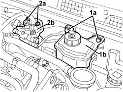
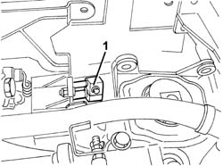
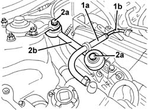
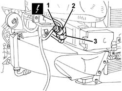
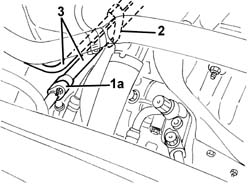

5040A76 tandem pipe for delivery and return from evaporator rr
- Path
- Procedures > 50 AUXILIARY UNITS > 5040 AIR CONDITIONING CASING AND COMPONENTS > 5040A air conditioner coolant circuit > 5040A76 tandem pipe for delivery and return from evaporator rr
- Kind
- repair procedure (removal / refitting; the operation number is the code)
- Applies to
- engines: 1.9 JTD 16V; all production periods
- Interactive page
- https://sloeber94.github.io/elrnDB-a147/en/#/3025424
Applies to: engines: 1.9 JTD 16V; all production periods
 Removing
Removing
 Refitting
RefittingObserve the following precaution.
7025A12 Engine front sound insulation COVER - R.R.
Drain the coolant (0010T84 coolant for air conditioning system dehydrate and recharge ).
1016A10 sound-proofing cover - r + r
1060G80 ds electric injection control unit - r r
7055B54 under-engine guard - r r
7055B64 Engine compartment DUST shield in front wheel arch (one), left or right - R.R.
7055B42 Additional FRONT WHEEL ARCH (one), left or right - R.R.
1. Undo the bolts (1a) and move the power assisted steering fluid reservoir (1b).
2. Undo the bolts (2a) and move the diesel filter (2b).

Applies to: engines: 1.9 JTD 16V; all production periods
1. Undo the fixing bolt and disconnect the pipes from the air conditioning casing.

Applies to: engines: 1.9 JTD 16V; all production periods
1. Working on the right side of the engine compartment, disconnect the engine coolant flexible recovery pipe (1a) from the rigid pipe (1b).
2. Undo the bolts (2a) and remove the reaction connecting rod (2b).

Applies to: engines: 1.9 JTD 16V; all production periods
1. Working at the front of the vehicle on the right hand side, disconnect the electrical connection.
 | Name | Connector |
|---|---|---|
1 | 4 stage pressure switch |
2. Undo and remove the multi-stage pressure switch.
3. Disconnect the intermediate coupling for the pipe from the air conditioning casing to the condenser.

Applies to: engines: 1.9 JTD 16V; all production periods
1. Working at the front of the enigne compartment on the right hand side, disconnect the intermediate connector (1a) for the pipe from the air conditioning casing to the compressor.
2. Disconnect the bands securing the pipe to the bodyshell.
3. Remove the supply and return pipes from the evaporator.

Applies to: engines: 1.9 JTD 16V; all production periods
Refitting
RemovingCheck that the pipes are not damaged and that there are no cracks which would affect the seal.
Position the supply and return pipes from the evaporator and connect them to the bodyshell using the retaining bands.
Working at the front of the engine compartment on the right hand side, connect the intermediate connector for the pipe from the air conditioning casing to the compressor and the intermediate connector for the pipe from the air conditioning casing to the condenser.
 | Fastening | Component | Ø | Value (daNm) |
|---|---|---|---|---|
- | Bolt | COOLANT SYSTEM FITTINGS | M6 | 0.9 |
| Fastening | Component | Ø | Value (daNm) |
|---|---|---|---|---|
- | Nut | COOLANT SYSTEM FITTINGS | M6 | 0.9 |
Tighten the multi-stage pressure switch in its housing.
| Fastening | Component | Ø | Value (daNm) |
|---|---|---|---|---|
- | Bolt | COOLANT SYSTEM FITTINGS | M10 x 1 | 0.8 |
Connect the electrical connection.
Place the reaction connecting rod in position and tighten the bolts.
| Fastening | Component | Ø | Value (daNm) |
|---|---|---|---|---|
- | Bolt | REACTION ROD | M10 | 4.5 ÷ 5.5 |
Connect the engine coolant flexible recovery pipe to the rigid pipe.
Connect the pipes to the air conditioning casing and secure them using the bolt.
| Fastening | Component | Ø | Value (daNm) |
|---|---|---|---|---|
- | Bolt | COOLANT SYSTEM FITTINGS | M6 | 0.9 |
Place the diesel filter in position and fasten it using the bolts.
Place the power assisted steering fluid reservoir in position and secure it using the bolts.
7055B42 Additional FRONT WHEEL ARCH (one), left or right - R.R.
7055B64 Engine compartment DUST shield in front wheel arch (one), left or right - R.R.
7055B54 under-engine guard - r r
1060G80 ds electric injection control unit - r r
1016A10 sound-proofing cover - r + r
Repressurize using coolant fluid (0010T84 coolant for air conditioning system dehydrate and recharge ).
Topics linked from this page (11)
- 0010T84 coolant for air conditioning system dehydrate and recharge
- 1016A10 sound-proofing cover - r + r
- 1060G80 ds electric injection control unit - r r
- 5040 AIR CONDITIONING CASING AND COMPONENTS
- 7025A12 Engine front sound insulation COVER - R.R.
- 7025A14 Bonnet LID - R.R.
- 7055B42 Additional FRONT WHEEL ARCH (one), left or right - R.R.
- 7055B54 under-engine guard - r r
- 7055B64 Engine compartment DUST shield in front wheel arch (one), left or right - R.R.
- 7210E10 R.R. CENTRE PILLAR
- K10 4 stage pressure switch